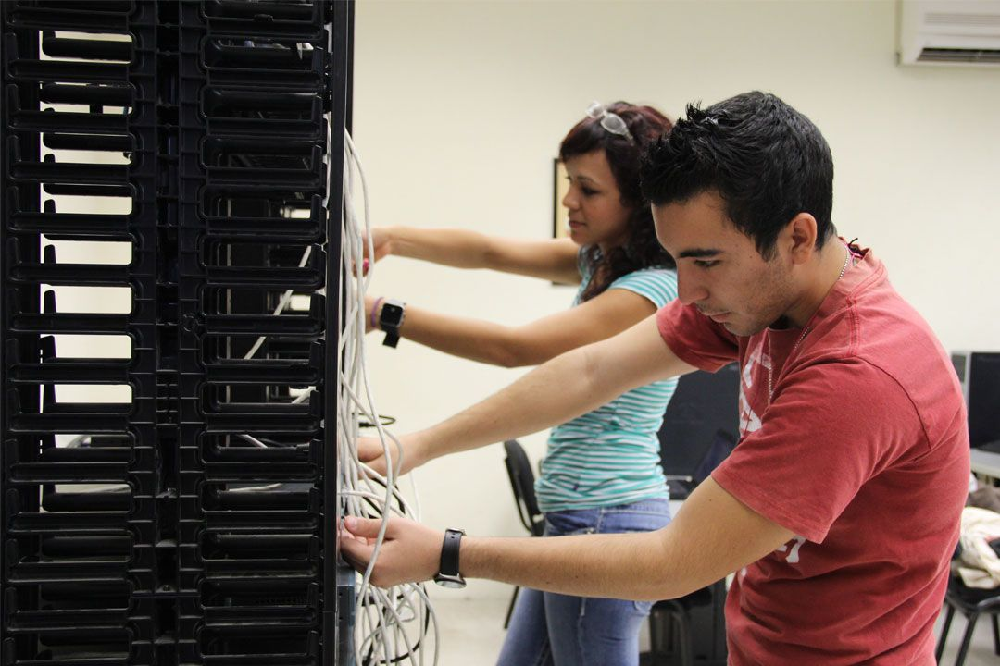
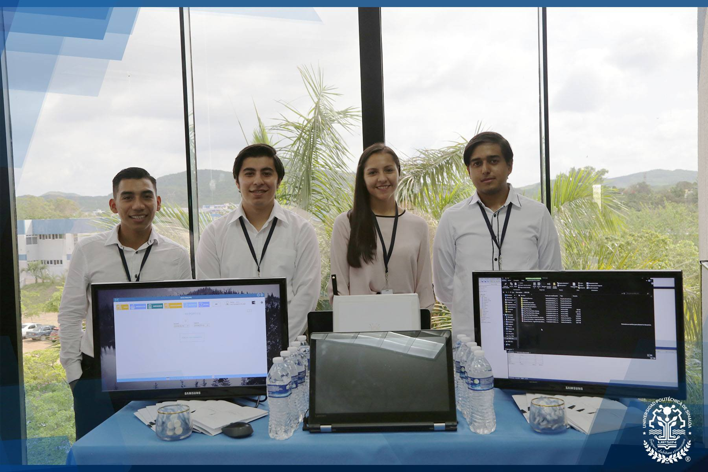
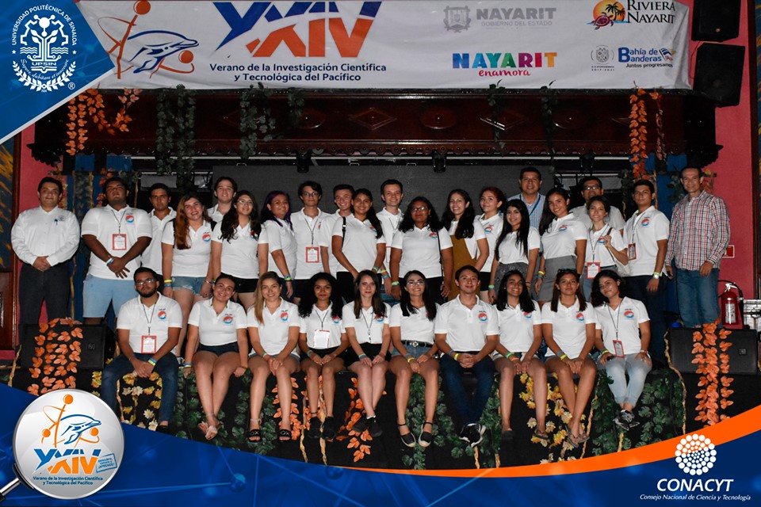

Misión

Formar profesionistas integrales bajo un modelo educativo basado en competencias, con los conocimientos,
competencias y habilidades técnicas, así como las actitudes y valores,
capaces de aplicar y desarrollar tecnologías informáticas que den solución con calidad a las necesidades técnicas del entorno.
Visión

El programa educativo es reconocido y acreditado por la calidad en la formación de sus egresados,
así como, su vinculación con el sector productivo nacional e internacional, que permite el desarrollo
y aplicación de líneas de investigación a través de proyectos tecnológicos que contribuyan en el desarrollo del país.
Objetivo

Formar ingenieros competentes en la implementación y administración de soluciones de negocios para la investigación basadas en computadora,
con una amplia visión de la ciencia y las nuevas tecnologías de la información, bajo el modelo de educación basado en competencias.